Friendsgiving is the dinner where nobody expects the good china, which is exactly why it is easy to overdo.
The tables that work have one strong colour, one source of height, and food people can reach without passing anything.
Everything else is optional.
Here are 25 ideas that get you there, grouped by where in the house they happen.

Five Rules for a Friendsgiving Table That Still Works
- Pick one accent colour and buy nothing outside it. Rust, burgundy or amber. Not all three.
- Keep the centerpiece under twelve inches. If guests lean sideways to talk, it is too tall.
- Real candles only where nobody reaches across. Battery tapers everywhere else, and set them on a timer.
- Leave a foot of bare table per person. Plates, a glass and elbows need it. Decor does not.
- Set up the drinks away from the food. Two stations split the crowd and stop the kitchen doorway from jamming.
Start with the table
1. Amber Glass Does What Flowers Usually Do
Colour on a table does not have to come from a centerpiece. It can come from the glassware.
Four amber goblets carry this whole setting, with rust napkins, gold flatware and a low run of eucalyptus and pinecones that stays well under the candle flames.
Amber glass is cheap secondhand. Buy six, not a matched set, and nobody will notice they are not identical.
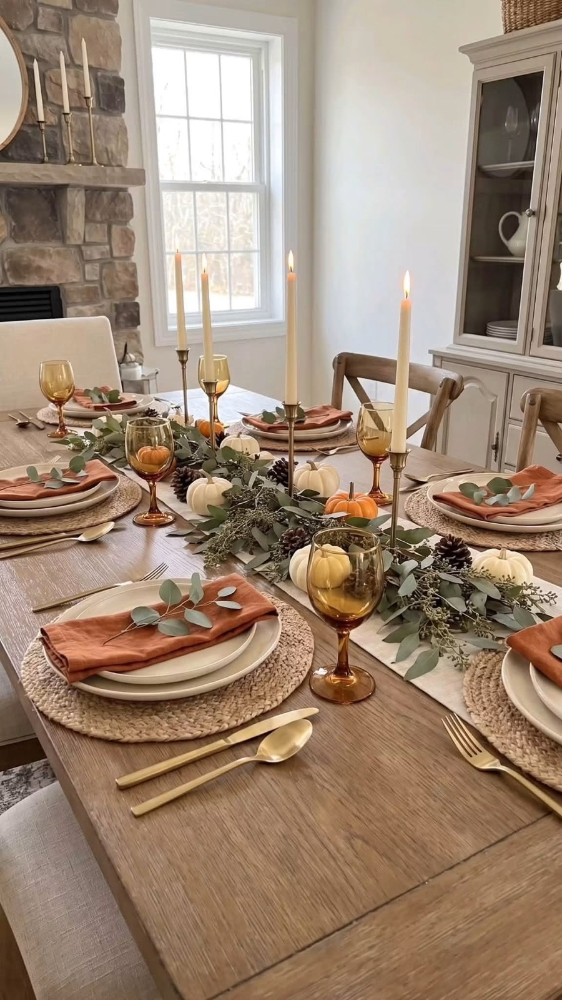
2. Dark Plates Make Cheap Chargers Look Expensive
A gold charger on a white plate reads as a party supply. The same charger under a matte black plate reads as a restaurant.
That is the trick here. Black dinner plates, gold chargers, burgundy napkins twisted loosely, and a striped runner with peonies and dried magnolia leaves in two cream vases.
Twist the napkins instead of folding them. A folded napkin on a black plate looks like a hotel.
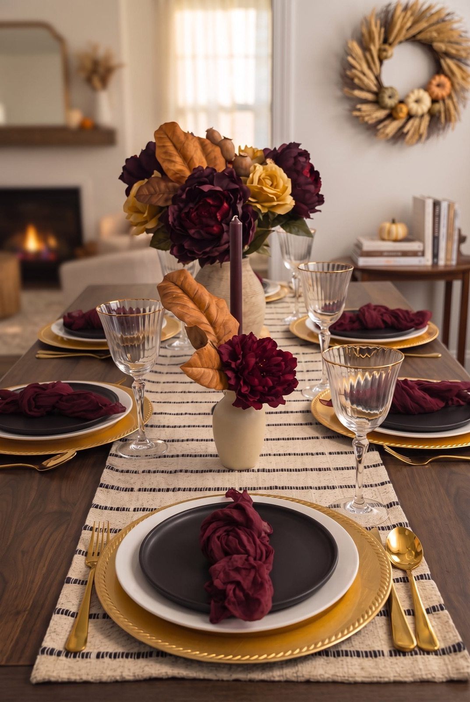
3. Count the Colours on a Moody Table
Burgundy, rust, brown and a little cream. That is four, and it is why this table feels rich instead of busy.
The pumpkins are cream and orange, the plates are chocolate brown, the napkins are burgundy with a jute ring, and the candles sit in bronze and amber glass so even the flames read warm.
When a table looks cluttered, the problem is usually a fifth colour, not too many objects. Remove the colour first.
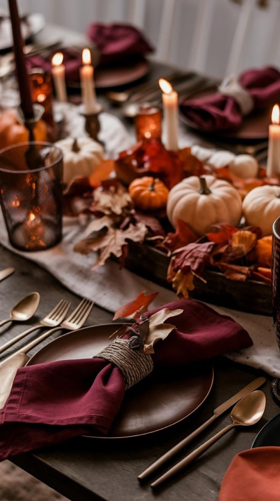
Gold Charger Plates, Set of 12
Shop on Amazon4. A Neutral Table Needs Texture, Not Colour
Take the colour away and the table has to earn its keep some other way.
This one does it with surfaces: a rough wood trough for the candles, linen napkins, a stoneware pumpkin, dried grasses, and tall glass hurricanes around the tapers.
Put candles inside glass when the table is this pale. A bare flame next to cream linen is one gesture away from a scorch mark.
I use hurricanes any time the tablecloth cost more than the candles.
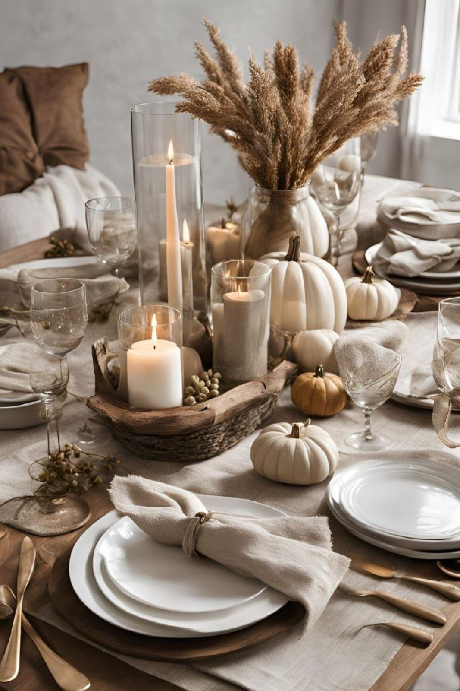

5. Pears Last Longer Than Flowers and Cost Less
A centerpiece you can eat on Sunday is a centerpiece you did not waste money on.
Here golden pears sit on a bed of magnolia leaves down a brown velvet runner, with gold chargers, transferware plates and olive napkins.
Buy pears a week early so they ripen to gold by the dinner. Green pears on a brown runner look unripe, not elegant.
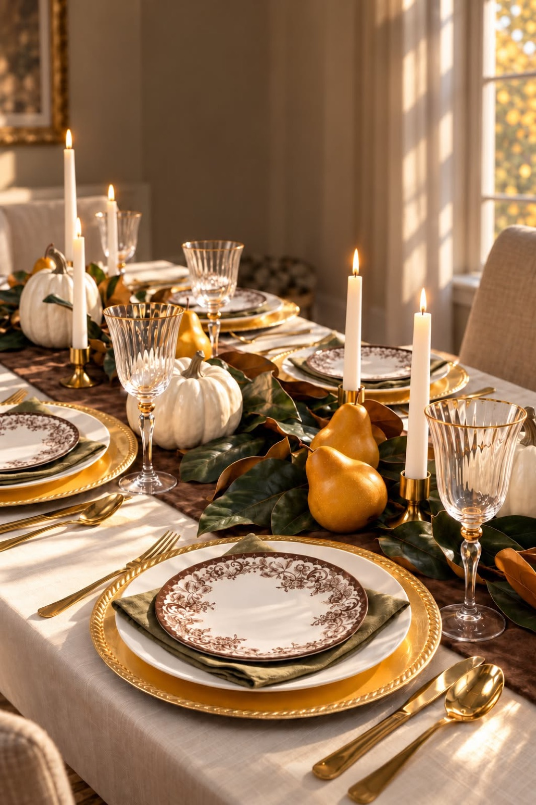
Gold Charger Plates, Set of 12
Shop on Amazon6. Mix Candle Heights or the Table Goes Flat
One candle height is a hotel lobby. Three is a dinner party.
This table has rust tapers up high, pillar candles in amber glass at mid height, and tealights in jars low down, with pampas and dried florals behind.
Dried grasses shed and catch fire easily, so keep pampas at least a foot from any flame and shake it outside before it comes in.
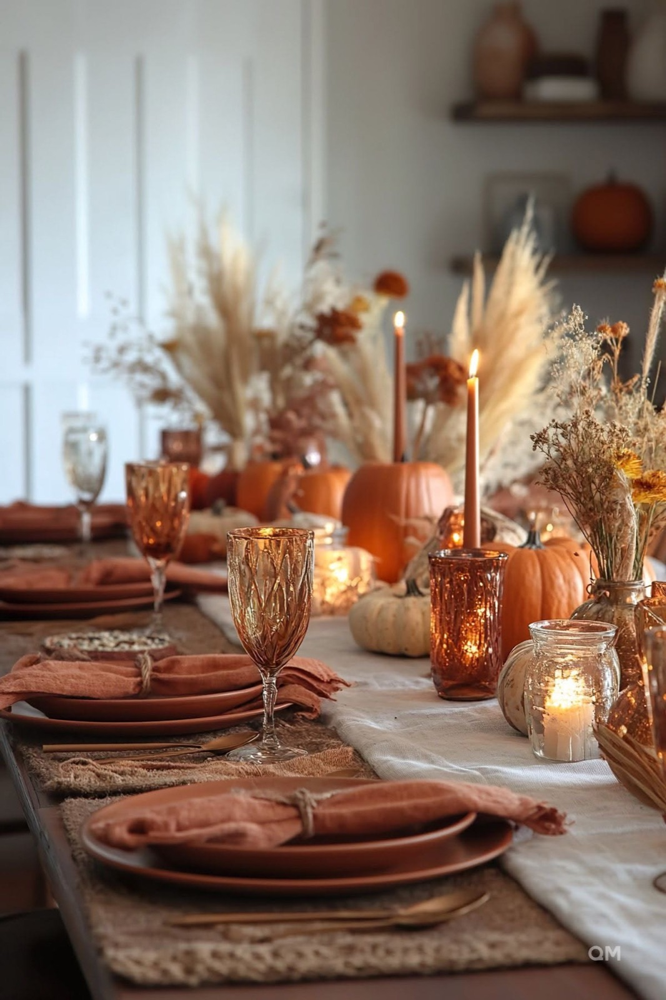
Natural Pampas Grass Stems, 30-Pack
Shop on AmazonAmber Glass Goblets, Set of 4
Shop on Amazon7. Painted Candles Let You Break the Colour Rule
Every rule has one exception, and for me it is a boho table.
Yellow, orange, pink and brown tapers in mismatched brass holders anchor this one, with sunflowers and roses in a twine-wrapped mason jar and a patterned runner underneath.
The trick is that the candles do all the colour work. The plates stay terracotta and the glasses stay clear.
Buy dipped or painted tapers rather than painting your own. Craft paint on a burning candle is not worth the fumes.
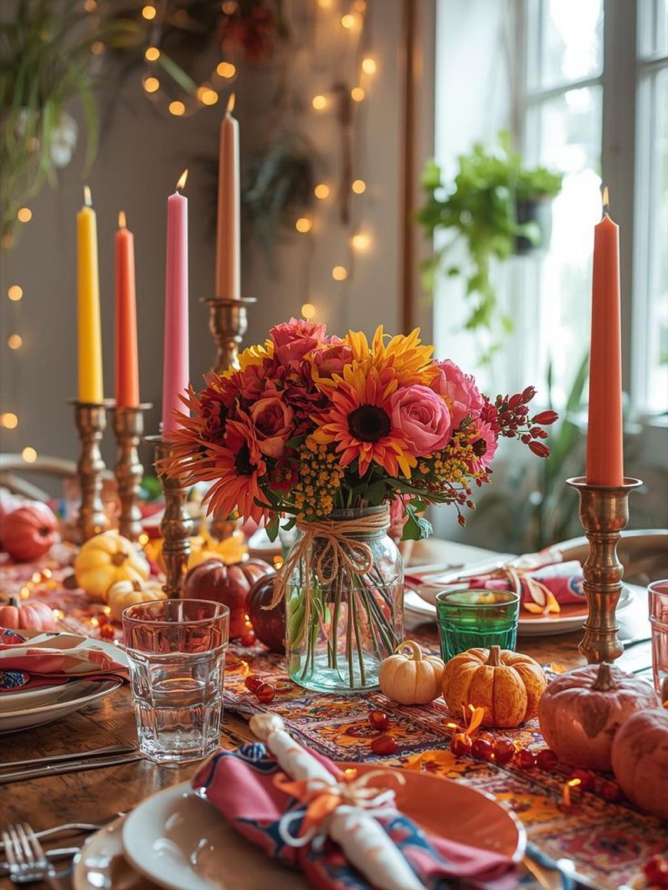
Take it outside
8. Amber Bottles Weigh Enough to Survive Wind
Outdoor centerpieces have one job before any other: stay put.
The brown glass jars and bottles here are heavy, squat and full of eucalyptus, which is why they are still upright at sunset while the runner drifts.
Pin or clip the runner to the table underneath. A plaid throw on each chair saves the party when the sun goes down and the temperature drops ten degrees.
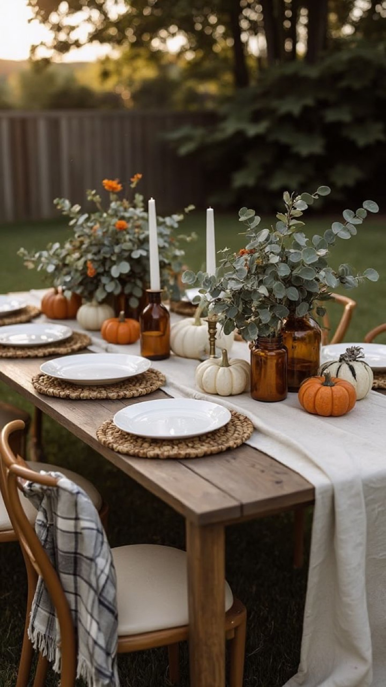
Amber Glass Goblets, Set of 4
Shop on Amazon9. Garland Is the Runner for a Long Outdoor Table
A fabric runner on a long table outside is a sail. A garland is not.
Eucalyptus with oak leaves and orange berries runs the length of this table, with white pumpkins set into it, brass candlesticks, and rust napkins tied with twine and a sprig of rosemary.
Use faux eucalyptus outdoors. Real cut stems wilt within three hours in sun, and the faux kind packs away for next year.
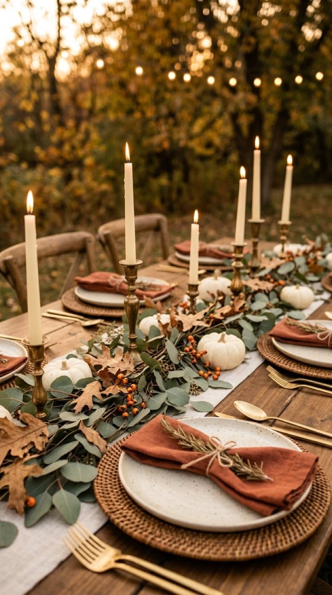

10. Macrame Hides a Picnic Table's Worst Feature
The slats.
A long macrame runner covers the gaps on this weathered picnic table, and the fringe falling off the end hides the bench ends too.
The turkey sits on a wood board, there are cushions on the bench, and a lantern holds the only candle.
Keep food off the runner itself. Macrame does not wash well, and gravy finds the gaps.
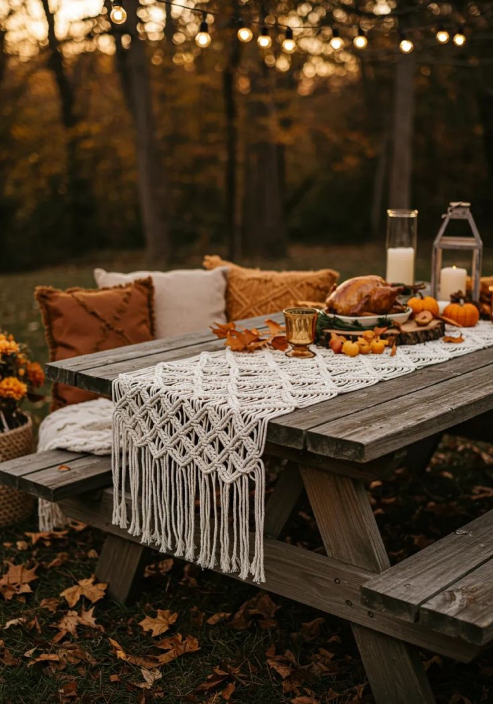
Cream Beeswax Taper Candles, 6-Pack
Shop on Amazon11. Hay Bales Seat Twenty for the Price of One Rental Chair
If you are short on seating, go to the feed store.
Square bales covered in plaid blankets are the seating here, under crisscrossed string lights and paper lanterns in cream and coral, with pumpkins on the ground.
Cover every bale with a blanket or a sheet, because hay through trousers itches for an hour. Keep the bales and the lanterns well away from the fire pit.
Plan for one bale per two guests and a few spare blankets.
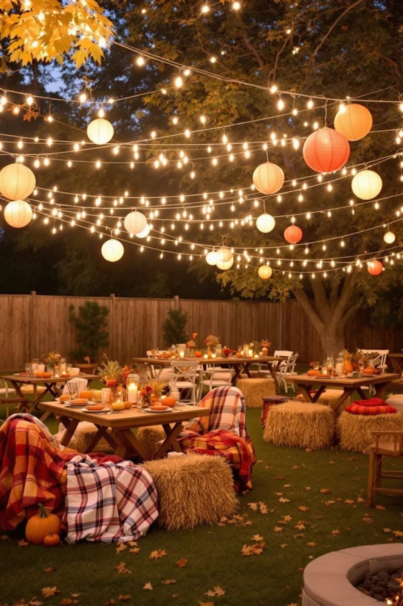
12. A Balloon Arch Is a Daytime Decoration
Balloons photograph best in flat daylight and look tired after dark, so if you are building one, build it for the arrival shots.
This arch is terracotta, rust and cream with dried palm fronds and pampas worked in, over a long table of rattan chairs in a vineyard.
Outdoors, inflate balloons slightly under full size. Heat expands them, and a full balloon in afternoon sun pops.
Tie the arch to something heavy. Even a sandbag.
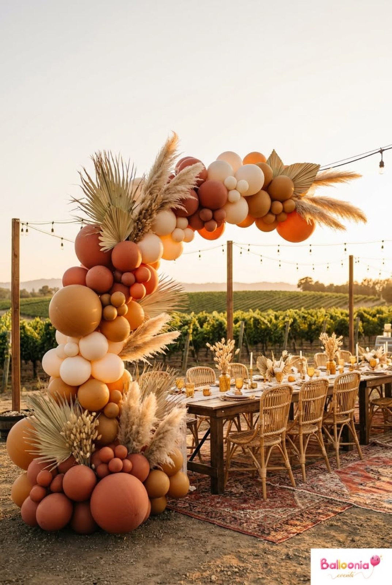
Centerpieces that cost almost nothing
13. Fruit on a Board Beats a Bouquet for Half the Price
A live-edge board, a bag of apples and pears, and a few supermarket flowers tucked between them. That is the whole centerpiece.
Three candles in glass sit at the ends so nothing green is near a flame.
Pull the fruit from the fridge an hour ahead so it does not sweat on the wood, and send guests home with it afterwards.
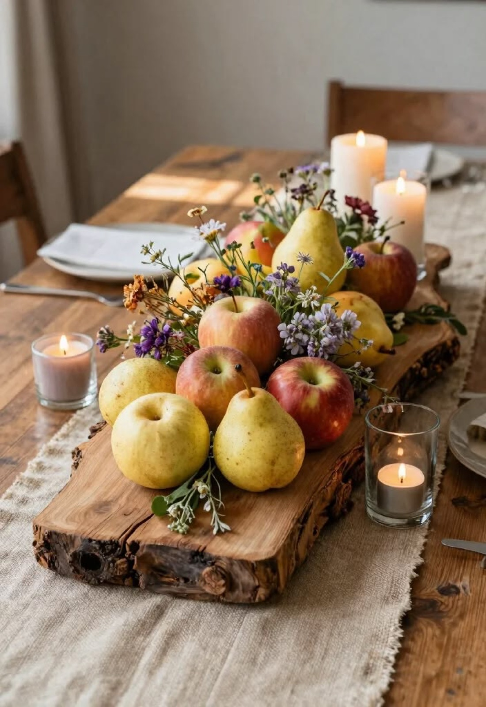
14. A Gratitude Tree Gives Shy Guests Something to Do
Not everyone wants to say what they are thankful for out loud.
Bare branches in a white vase hold kraft and coloured tags on twine here, each one written by a guest, with wine glasses and woven placemats around it.
Put the pen and tags by the door, not on the table. People write more honestly before they sit down with an audience.
Branches from the garden work if you let them dry for a week so they do not drop bark.
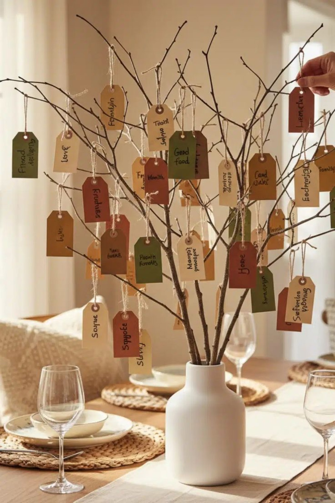
15. Paper Leaves Hold More Words Than Tags
The same idea, bigger surface.
This version uses craft-paper maple leaves in red, orange and yellow, each written on and tied to branches in a stoneware jar, with pumpkins and pinecones around the base on a plaid cloth.
Cut the leaves from cardstock, not printer paper. Thin paper curls under a pen and tears off the twine.
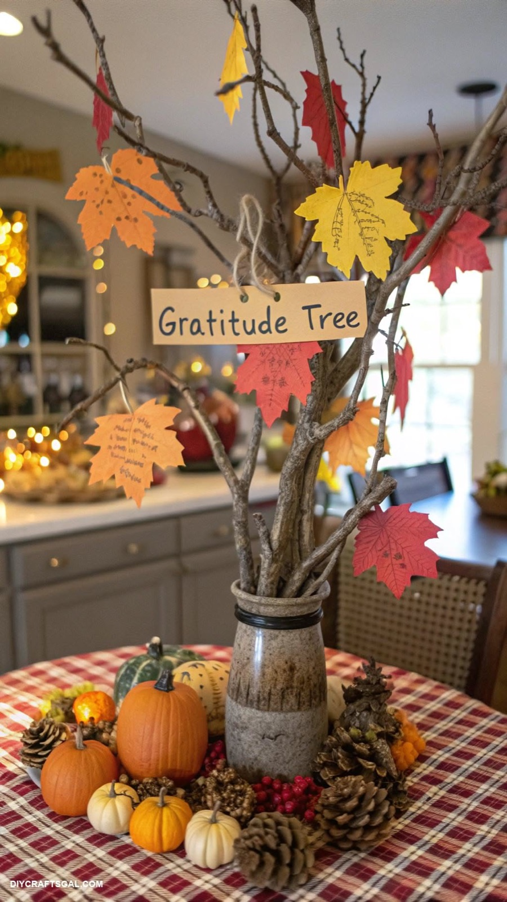
24-Inch Thanksgiving Gratitude Tree Kit
Shop on AmazonArtificial White Pumpkins, 12-Piece Bulk Set
Shop on Amazon16. A Kraft Paper Runner Is the Centerpiece and the Place Cards
Fifty feet of brown paper costs less than one tablecloth and does three jobs.
This one has Give Thanks lettered at the end, a joke written at every place, a berry garland down the middle and gourds scattered along it.
Write with a chisel-tip marker, and write the big words first so you can space the place names around them.
If you spill, you tear off that section and keep eating. That is the whole appeal.
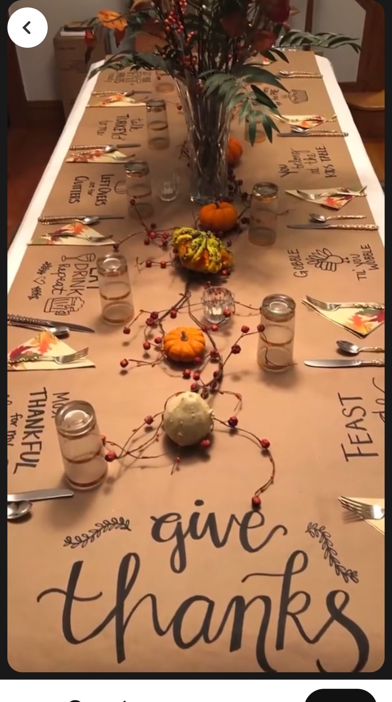
Natural Pampas Grass Stems, 30-Pack
Shop on AmazonFood, drink and favours
17. A Cider Station Needs One Rule: Mix It Yourself
A big dispenser of cider with the mixers beside it is a drinks station that runs itself all night.
Here it is a glass drink dispenser with a chalk tag, maple syrup, cinnamon, ginger beer, a bottle of spirits and sliced apples on a board.
Keep the dispenser spigot two inches above the counter edge or you cannot get a glass under it. A stack of books underneath fixes that.
Label the alcohol clearly so the kids and the drivers know which bottle is which.
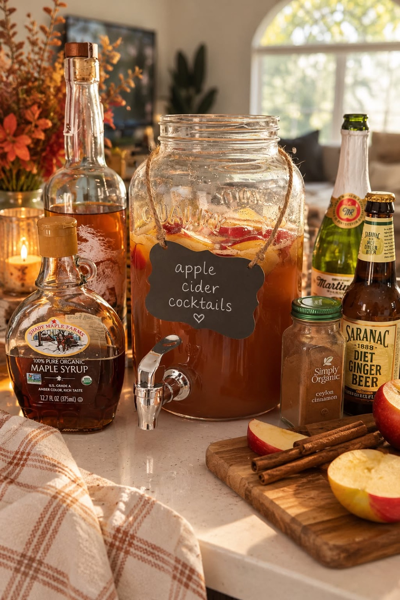

18. Give Dessert Its Own Table
Pies on the dinner table get dripped on. Pies on their own table get eaten.
Pumpkin, pecan, cranberry and apple pies sit on glass stands at different heights here, with cookies, caramel apples and cinnamon rolls on plates between white pumpkins and leaves.
Vary the stand heights so people can see everything from the doorway, and put the pie knives out before the first guest reaches for one.
Pumpkin and custard pies go back in the fridge within two hours.
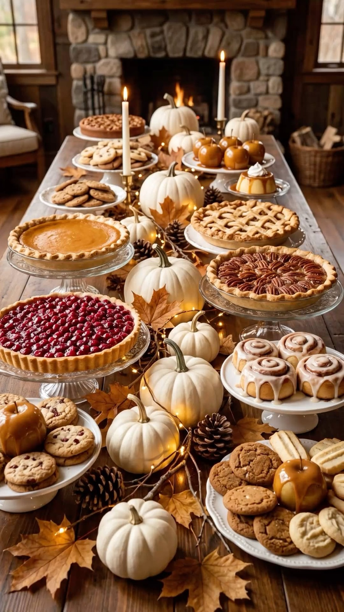
19. A Sideboard Buffet Keeps the Table Clear
Serving from the table means the dishes never leave it.
This buffet runs along a counter behind the sofa: a casserole, mac and cheese, stuffing, and plates stacked at the end, with pumpkins and leaves along the front edge where no dish will sit.
Put plates at the start and cutlery at the end, so nobody juggles a fork while they serve.
Hot dishes go on trivets. A warm casserole will mark a stone counter.
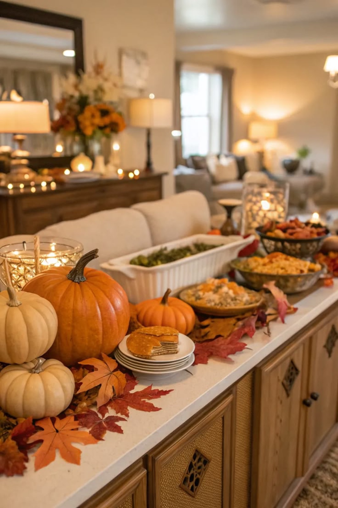
Fall Leaf Garland with LED Lights, 20 ft
Shop on Amazon20. Apple Butter Favours Cost Two Dollars a Jar
One slow cooker of apple butter fills sixteen small jars, and the jars are the favour.
These have plaid fabric circles tied over the lids with twine and a kraft tag, stacked on a burlap mat in the middle of the table.
Process the jars in a water bath if they will sit at room temperature. If not, tell guests to refrigerate them and eat within three weeks.
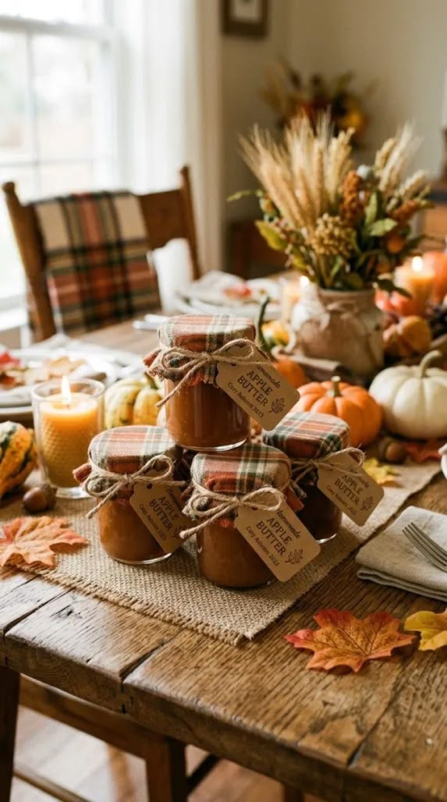

21. A Printed Menu Tells Guests Not to Fill Up on Bread
People pace themselves when they know four courses are coming.
This one is a single sheet with a watercolour leaf border, listing an aperitif, a soup, roast chicken and crêpes.
Print one per couple, not per guest. Fold it in half and tuck it under the napkin.
Note any nuts or dairy next to the dish. It saves the host answering the same question six times.
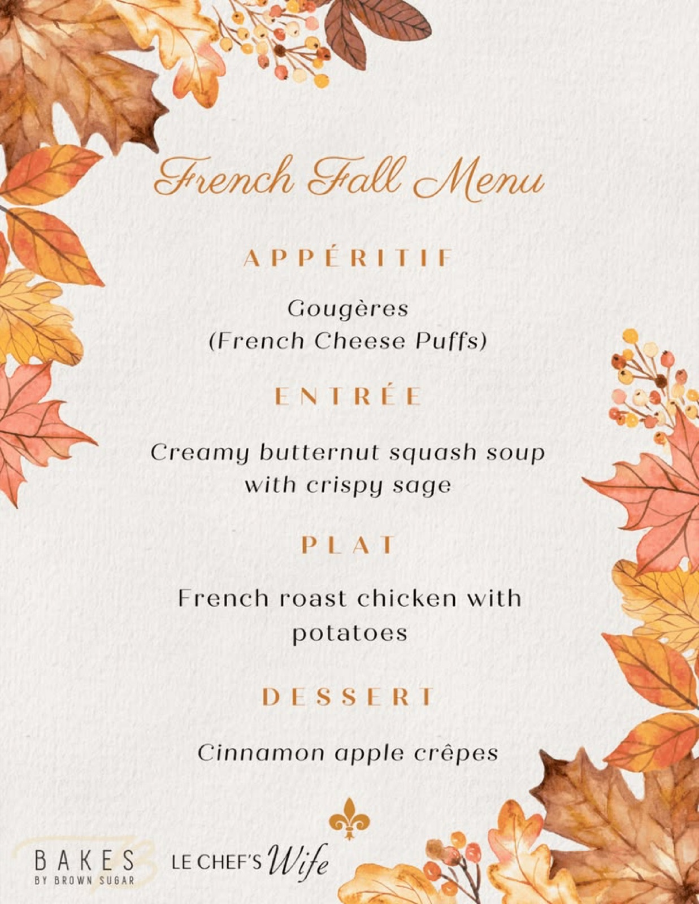
Kraft Paper Table Runner Roll, 50 ft
Shop on AmazonBurgundy Linen Dinner Napkins, Set of 4
Shop on AmazonThe rest of the house
22. The Living Room Hosts the First Hour
Nobody sits down to dinner on arrival. They stand around the sofa, so the sofa gets decorated too.
Rust and cream cushions, two chunky throws, a tray with a candle and a bowl of nuts on the coffee table, and a vase of dried orange stems.
Put a snack within reach of every seat. A single bowl on the coffee table feeds the three people nearest it and nobody else.
Light the candles before the first knock, not after.
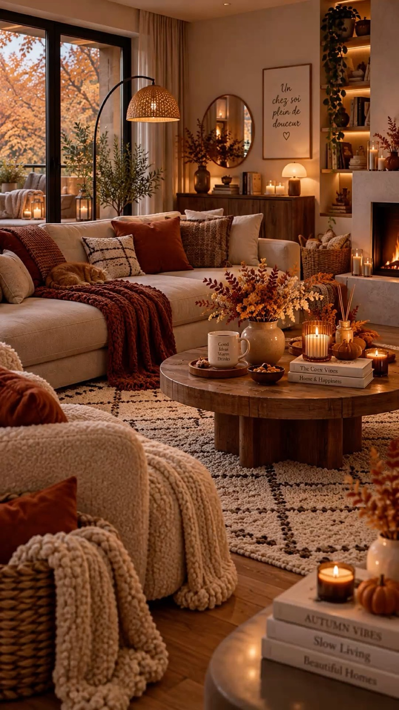
Artificial Fall Floral Stems, 2 Bundles
Shop on AmazonCream Beeswax Taper Candles, 6-Pack
Shop on Amazon23. The Porch Is the First Thing Guests Photograph
A welcome sign, a mum, a lantern and a pile of pumpkins is the whole formula, and it has not changed because it works.
This porch has a tall vertical Welcome sign, a black lantern with a battery candle, a potted orange mum, a crate of leaves and a buffalo check mat.
Use battery candles outside. A real candle in a lantern blows out, and if the glass is cracked, the wind does the rest.
Bring the mum inside on frost nights.
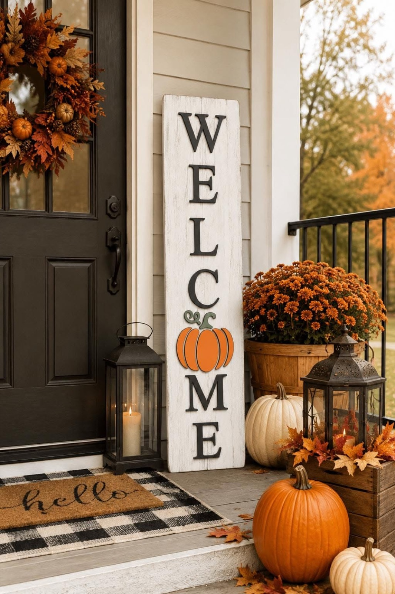
24. A Lit Leaf Garland Replaces the Mantel Candles
Candles on a mantel compete with the fire below them. Lights do not.
A strand of fabric maple leaves wired with warm LEDs drapes along this white mantel, with a single flameless pillar and framed prints behind.
Buy a warm-white strand, around 2700K. Cool white on autumn leaves looks like a hospital.
Run it on a timer set for dusk, and it comes on before you remember.
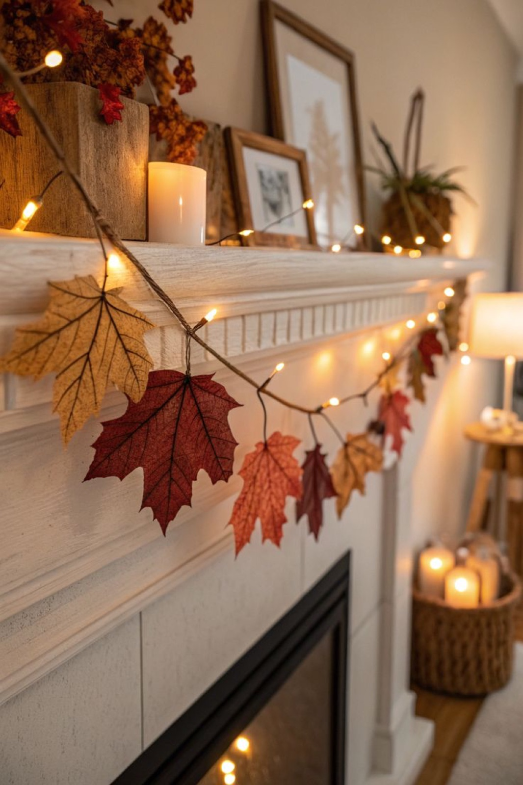
Fall Leaf Garland with LED Lights, 20 ft
Shop on AmazonCream Beeswax Taper Candles, 6-Pack
Shop on Amazon25. One Sign at the Door Does the Talking
You do not need a banner, a chalkboard and a wreath. One arched sign reading Eat, Drink and Give Thanks does it.
This one leans against a wall in terracotta, cream and sage.
Lean it rather than hang it. It comes out for one night a year and should not leave a nail hole.
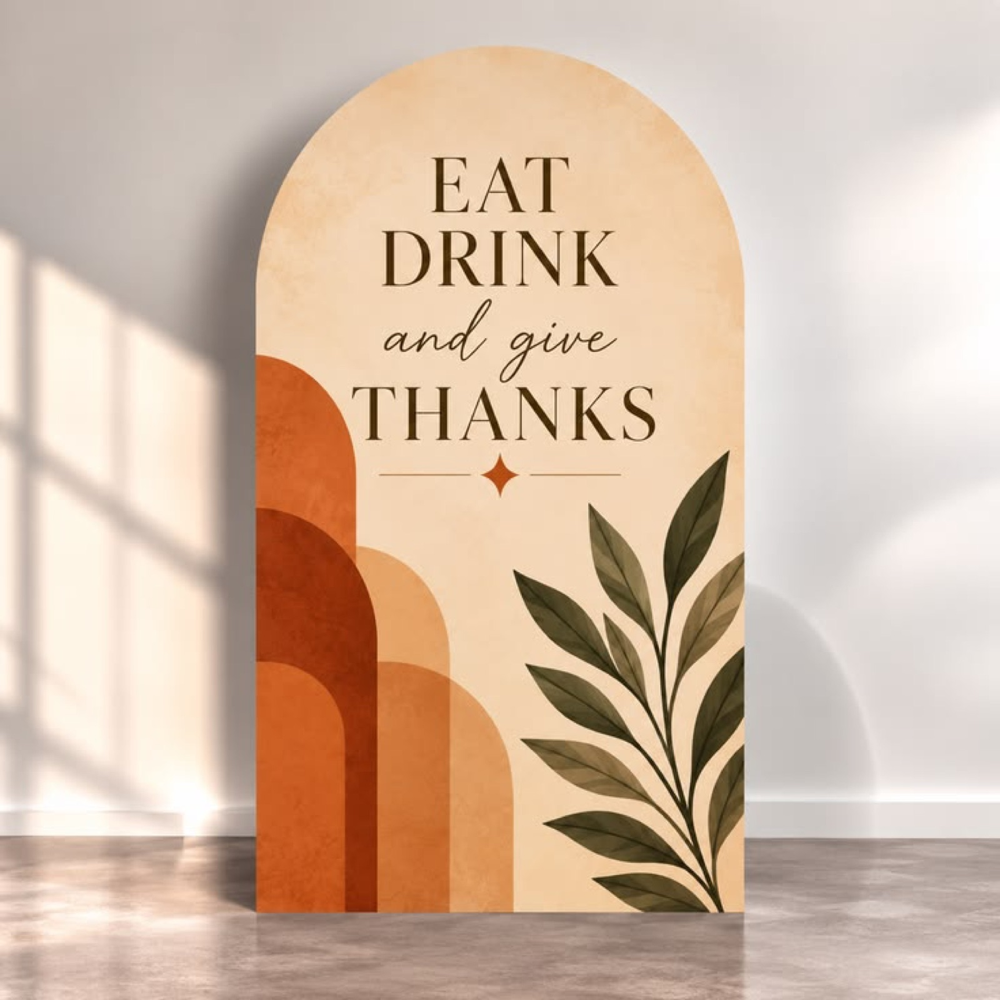
Farmhouse Wood Thankful Sign
Shop on AmazonNatural Pampas Grass Stems, 30-Pack
Shop on AmazonCommon Mistakes (and Fixes)
- A centerpiece nobody can see over. Anything over twelve inches goes to the sideboard. The table gets the low stuff.
- Real candles on a paper runner. Battery tapers on paper, real ones only in glass.
- Everything matches. One mismatched piece, a secondhand goblet or a different chair, is what stops a table looking like a catalogue.
- Food on the decorated table. Serve from the counter or sideboard. The dinner table is for plates and glasses.
- Decorating the dining room and nothing else. Guests spend the first hour in the living room and the last hour by the drinks. Spend ten minutes on each.
Where to Start
Friendsgiving does not need a rented table or a florist.
Pick one colour, keep the centerpiece low, put the drinks away from the food, and set the living room up for the first hour.
Then light the candles before the doorbell rings.
Everything on this list past that point is a bonus.